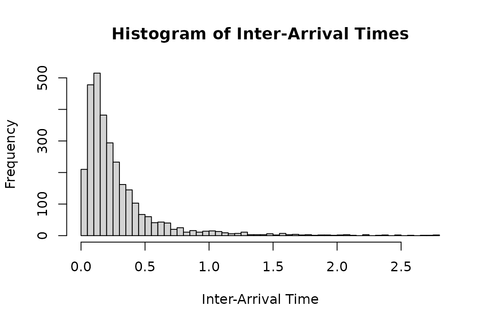
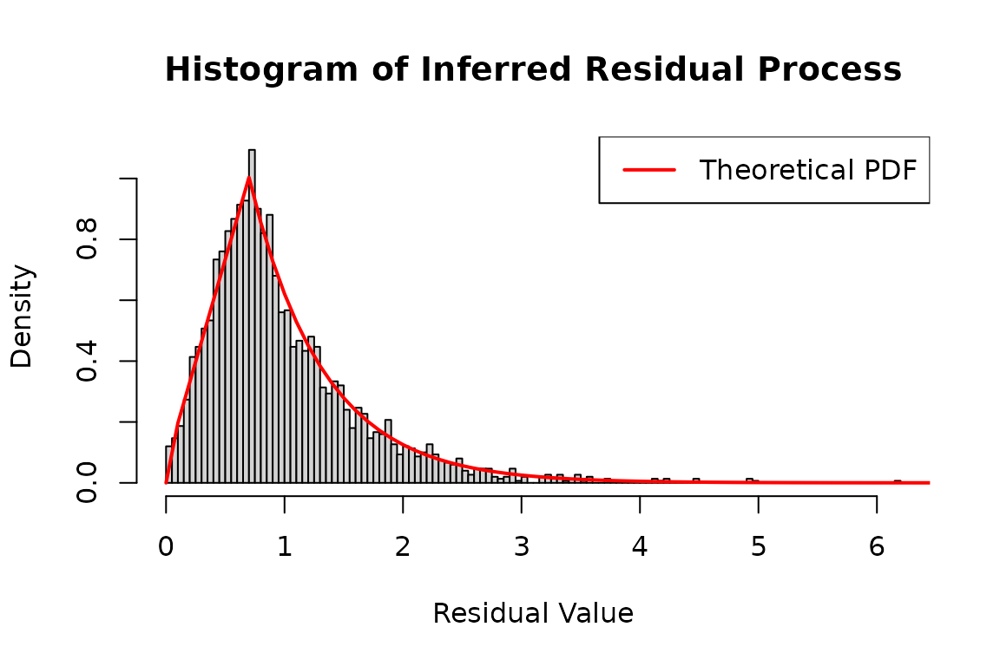
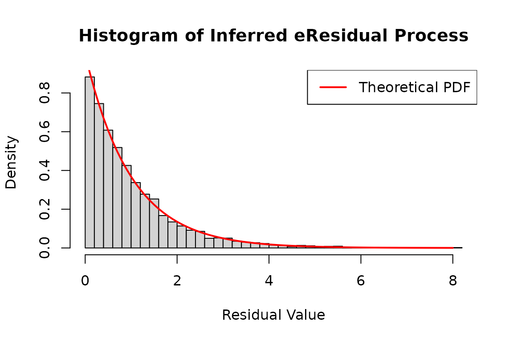
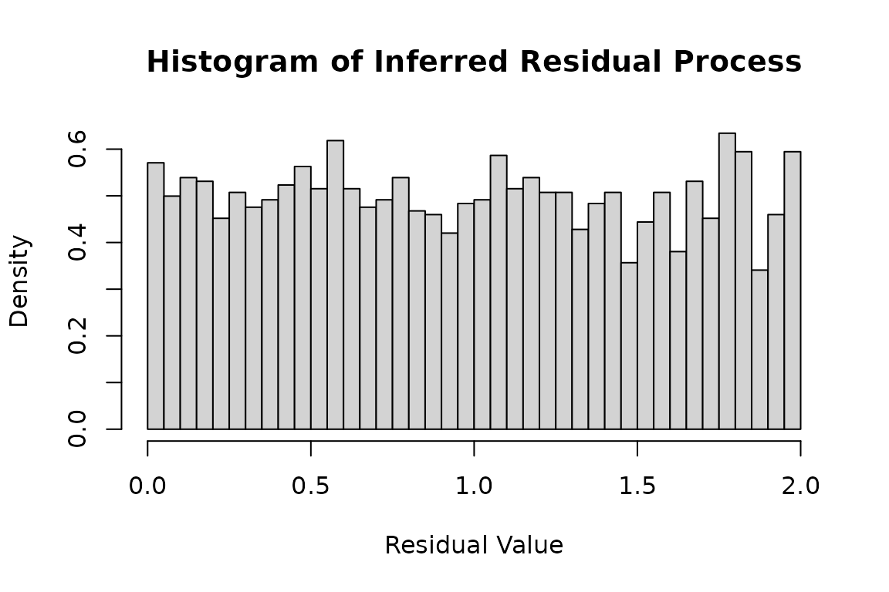

Extended examples for the emhawkes package
Kyungsub Lee
2026-10-17
Source:vignettes/articles/extended_example.Rmd
extended_example.RmdThese examples cover models beyond the basic univariate and bivariate workflow. Read Get started first. Each model section defines its own specification and simulated data.
For background and shared conventions, see:
- Univariate and bivariate basics: Get started.
- Parameter settings and observed data and initial state: Fitting and inference.
- Calculation engines: Computation.
- Residual diagnostics: Fitting and inference.
More complex models
Multi-kernel model
A multi-kernel Hawkes model requires type_col_map in its
hspec object. This list maps each event type to the
corresponding columns of the kernel parameter matrices. Consider a
bivariate multi-kernel model:
where
Here, indexes the kernels, is the excitation matrix for kernel , and denotes elementwise multiplication.
For a bivariate Hawkes model with two kernels, the intensity processes are
The parameter matrices are
The mapping must specify which columns correspond to each counting process .
mu <- matrix(c(0.02, 0.02), nrow=2)
beta_1 <- matrix(rep(10, 4), nrow=2)
beta_2 <- matrix(rep(1, 4), nrow=2)
beta <- cbind(beta_1, beta_2)
alpha_1 <- matrix(c(3, 2,
2, 3), nrow=2, byrow=TRUE)
alpha_2 <- matrix(c(0.3, 0.2,
0.2, 0.3), nrow=2, byrow=TRUE)
alpha <- cbind(alpha_1, alpha_2)
print(alpha)
#> [,1] [,2] [,3] [,4]
#> [1,] 3 2 0.3 0.2
#> [2,] 2 3 0.2 0.3The first and third columns of
correspond to
,
and the second and fourth columns correspond to
.
Thus, define type_col_map as follows:
type_col_map <- list(c(1,3), # columns for dN1
c(2,4)) # columns for dN2
type_col_map
#> [[1]]
#> [1] 1 3
#>
#> [[2]]
#> [1] 2 4The entry type_col_map[[i]] lists the columns associated
with event type i. Rows of the intensity matrix identify
event types. After a type i event,
type_col_map[[i]] selects the kernel columns to update. Use
this mapping to extract the corresponding parameters:
cat("Part of alpha associated with N1: \n")
#> Part of alpha associated with N1:
alpha[, type_col_map[[1]]] # associated with N1
#> [,1] [,2]
#> [1,] 3 0.3
#> [2,] 2 0.2
cat("Part of alpha associated with N2: \n")
#> Part of alpha associated with N2:
alpha[, type_col_map[[2]]] # associated with N2
#> [,1] [,2]
#> [1,] 2 0.2
#> [2,] 3 0.3
cat("Part of beta associated with N1: \n")
#> Part of beta associated with N1:
beta[, type_col_map[[1]]] # associated with N1
#> [,1] [,2]
#> [1,] 10 1
#> [2,] 10 1
cat("Part of beta associated with N2: \n")
#> Part of beta associated with N2:
beta[, type_col_map[[2]]] # associated with N2
#> [,1] [,2]
#> [1,] 10 1
#> [2,] 10 1
h <- new("hspec", mu = mu, alpha = alpha, beta=beta, type_col_map = type_col_map)
h
#> An object of class "hspec" of 2-dimensional Hawkes process
#>
#> Slot mu:
#> [,1]
#> [1,] 0.02
#> [2,] 0.02
#>
#> Slot alpha:
#> [,1] [,2] [,3] [,4]
#> [1,] 3 2 0.3 0.2
#> [2,] 2 3 0.2 0.3
#>
#> Slot beta:
#> [,1] [,2] [,3] [,4]
#> [1,] 10 10 1 1
#> [2,] 10 10 1 1
#>
#> Slot type_col_map:
#> [[1]]
#> [1] 1 3
#>
#> [[2]]
#> [1] 2 4For this multi-kernel model, lambda_component0 must be
supplied for both simulation and estimation.
set.seed(620)
lambda_component0_mk <- matrix(seq(1, 1.7, 0.1), nrow = 2)
res_mk <- hsim(h, size = 3000, lambda_component0 = lambda_component0_mk)
res_mk
#> -------------------------------------------------------
#> Simulation result of exponential (marked) Hawkes model.
#> An object of class "hspec" of 2-dimensional Hawkes process
#>
#> Slot mu:
#> [,1]
#> [1,] 0.02
#> [2,] 0.02
#>
#> Slot alpha:
#> [,1] [,2] [,3] [,4]
#> [1,] 3 2 0.3 0.2
#> [2,] 2 3 0.2 0.3
#>
#> Slot beta:
#> [,1] [,2] [,3] [,4]
#> [1,] 10 10 1 1
#> [2,] 10 10 1 1
#>
#> Slot type_col_map:
#> [[1]]
#> [1] 1 3
#>
#> [[2]]
#> [1] 2 4
#>
#>
#> Realized path :
#> arrival N1 N2 mark lambda1 lambda2 lambda11 lambda12 lambda13 lambda14
#> [1,] 0.0000 0 0 0 5.220 5.620 1.0000000 1.200e+00 1.4000 1.6000
#> [2,] 0.3339 1 0 1 2.247 2.397 0.0354893 4.259e-02 1.0026 1.1459
#> [3,] 1.2043 1 1 1 1.046 1.064 0.0005036 7.065e-06 0.5455 0.4799
#> [4,] 1.2103 2 1 1 3.122 4.182 0.0004743 1.884e+00 0.5423 0.6758
#> [5,] 1.3704 3 1 1 2.299 2.302 0.6051446 3.799e-01 0.7176 0.5758
#> [6,] 1.4098 3 2 1 4.238 3.474 2.4298143 2.561e-01 0.9783 0.5535
#> [7,] 1.5416 3 3 1 2.793 2.894 0.6507825 6.043e-01 0.8575 0.6605
#> [8,] 1.6639 3 4 1 2.498 2.919 0.1914158 7.660e-01 0.7588 0.7614
#> [9,] 2.0338 3 5 1 1.282 1.454 0.0047375 6.846e-02 0.5242 0.6642
#> [10,] 2.1098 4 5 1 2.276 2.981 0.0022151 9.671e-01 0.4858 0.8009
#> [11,] 2.3626 5 5 1 1.569 1.623 0.2396920 7.722e-02 0.6103 0.6220
#> [12,] 2.7052 5 6 1 1.216 1.178 0.1053725 2.511e-03 0.6462 0.4416
#> [13,] 2.7692 5 7 1 2.339 2.939 0.0555568 1.056e+00 0.6062 0.6018
#> [14,] 2.9333 6 7 1 1.818 2.272 0.0107638 5.920e-01 0.5144 0.6804
#> [15,] 3.0063 7 7 1 3.146 2.862 1.4508962 2.853e-01 0.7571 0.6325
#> [16,] 3.3222 7 8 1 1.453 1.365 0.1889842 1.211e-02 0.7707 0.4612
#> [17,] 3.3779 7 9 1 2.636 3.241 0.1082998 1.153e+00 0.7290 0.6254
#> [18,] 3.4084 8 9 1 3.931 5.226 0.0798097 2.324e+00 0.7071 0.8006
#> [19,] 3.7871 8 10 1 1.380 1.425 0.0698539 5.270e-02 0.6897 0.5482
#> [20,] 3.8329 9 10 1 2.736 3.505 0.0441702 1.298e+00 0.6588 0.7147
#> lambda21 lambda22 lambda23 lambda24
#> [1,] 1.1000000 1.300e+00 1.5000 1.7000
#> [2,] 0.0390382 4.614e-02 1.0742 1.2175
#> [3,] 0.0003383 7.654e-06 0.5336 0.5098
#> [4,] 0.0003186 2.826e+00 0.5304 0.8050
#> [5,] 0.4034302 5.699e-01 0.6224 0.6859
#> [6,] 1.6198765 3.841e-01 0.7906 0.6594
#> [7,] 0.4338551 9.064e-01 0.6930 0.8410
#> [8,] 0.1276106 1.149e+00 0.6132 1.0095
#> [9,] 0.0031583 1.027e-01 0.4236 0.9046
#> [10,] 0.0014767 1.451e+00 0.3926 1.1165
#> [11,] 0.1597947 1.158e-01 0.4602 0.8671
#> [12,] 0.0702484 3.767e-03 0.4687 0.6156
#> [13,] 0.0370378 1.584e+00 0.4397 0.8588
#> [14,] 0.0071759 8.881e-01 0.3731 0.9834
#> [15,] 0.9672641 4.280e-01 0.5328 0.9142
#> [16,] 0.1259895 1.817e-02 0.5343 0.6665
#> [17,] 0.0721999 1.730e+00 0.5053 0.9142
#> [18,] 0.0532064 3.485e+00 0.4901 1.1777
#> [19,] 0.0465693 7.905e-02 0.4726 0.8065
#> [20,] 0.0294468 1.947e+00 0.4514 1.0569
#> ... with 2980 more rows
#> -------------------------------------------------------
fit_mk <- hfit(h, res_mk$inter_arrival, res_mk$type,
lambda_component0 = lambda_component0_mk,
final_hessian = "stable")
#> hfit: equal starting values within each matrix share a parameter (reduced = TRUE; mu, alpha, beta).
#> Use reduced = FALSE to estimate matrix entries separately.
summary(fit_mk)
#> --------------------------------------------
#> Maximum Likelihood estimation
#> BFGS maximization, 77 iterations
#> Return code 0: successful convergence
#> Log-Likelihood: 6084.72
#> 7 free parameters
#> Estimates:
#> Estimate Std. error t value Pr(> t)
#> mu1 0.011162 0.007743 1.442 0.1494
#> alpha1.1 2.474140 0.350309 7.063 1.63e-12 ***
#> alpha1.2 1.380734 0.298057 4.632 3.61e-06 ***
#> alpha1.3 0.044026 0.097978 0.449 0.6532
#> alpha1.4 0.231206 0.127207 1.818 0.0691 .
#> beta1.1 6.202808 1.480638 4.189 2.80e-05 ***
#> beta1.3 0.700741 0.277825 2.522 0.0117 *
#> ---
#> Signif. codes: 0 '***' 0.001 '**' 0.01 '*' 0.05 '.' 0.1 ' ' 1
#> --------------------------------------------This example explicitly requests the checked final Hessian. The original estimate is retained, but its score calls for tighter optimization and multiple starting values. Kernel starting order and the fixed initial state can affect the selected local solution.
fit_diagnostics(fit_mk)[c("status", "newton_decrement", "warnings")]
#> $status
#> [1] "ok"
#>
#> $newton_decrement
#> [1] 0.0003106036
#>
#> $warnings
#> character(0)Reconstruction retains type_col_map and the supplied
initial intensity matrix. Each kernel uses its own decay rate in the
likelihood and residual integrals. The inferred likelihood agrees with
the fitted likelihood even though decay rates differ within each
row.
estimated_mk <- fitted_hspec(fit_mk)
initial_mk <- fit_initial_state(fit_mk)
estimated_mk@type_col_map
#> [[1]]
#> [1] 1 3
#>
#> [[2]]
#> [1] 2 4
initial_mk$lambda_component0
#> [,1] [,2] [,3] [,4]
#> [1,] 1.0 1.2 1.4 1.6
#> [2,] 1.1 1.3 1.5 1.7
inferred_mk <- do.call(logLik, c(list(object = estimated_mk,
inter_arrival = res_mk$inter_arrival, type = res_mk$type, infer = TRUE), initial_mk))
c(fitted = as.numeric(logLik(fit_mk)), restored = inferred_mk$loglikelihood)
#> fitted restored
#> 6084.72 6084.72
all.equal(as.numeric(logLik(fit_mk)), inferred_mk$loglikelihood)
#> [1] TRUESynchronized intensity model
This is a two-kernel model with the following reparameterization.
To implement this reparameterization, define mu,
alpha, and beta as functions. Each function
takes a named parameter vector, param, as its first
argument.
mu <- function(param = c(theta_p = 0.15, theta_n = 0.21, kappa = 0.12)){
theta <- (param["theta_n"] + param["theta_p"])/2
theta_tl <- (param["theta_n"] - param["theta_p"])/2
matrix(c(theta/2/(1 - param["kappa"]) + theta_tl/2/(1 + param["kappa"]),
theta/2/(1 - param["kappa"]) - theta_tl/2/(1 + param["kappa"])), nrow=2)
}
alpha <- function(param = c(eta = 5, nu = 3)){
zeta <- (param["eta"] + param["nu"])/2
zeta_tl <- (param["eta"] - param["nu"])/2
matrix(c(zeta, zeta_tl, zeta, -zeta_tl,
zeta, -zeta_tl, zeta, zeta_tl), nrow=2, byrow=TRUE)
}
beta <- function(param = c(beta = 12, kappa = 0.12)){
beta1 <- param["beta"] * (1 - param["kappa"])
beta2 <- param["beta"] * (1 + param["kappa"])
matrix(c(beta1, beta2, beta1, beta2,
beta1, beta2, beta1, beta2), nrow = 2, byrow = TRUE)
}
type_col_map <- list(c(1,2), c(3,4))
h_sy <- new("hspec", mu = mu, alpha = alpha, beta = beta, type_col_map = type_col_map)
h_sy
#> An object of class "hspec" of 2-dimensional Hawkes process
#>
#> Slot mu:
#> function (param = c(theta_p = 0.15, theta_n = 0.21, kappa = 0.12))
#> {
#> theta <- (param["theta_n"] + param["theta_p"])/2
#> theta_tl <- (param["theta_n"] - param["theta_p"])/2
#> matrix(c(theta/2/(1 - param["kappa"]) + theta_tl/2/(1 + param["kappa"]),
#> theta/2/(1 - param["kappa"]) - theta_tl/2/(1 + param["kappa"])),
#> nrow = 2)
#> }
#> <bytecode: 0x55834e2be3d8>
#>
#> Slot alpha:
#> function (param = c(eta = 5, nu = 3))
#> {
#> zeta <- (param["eta"] + param["nu"])/2
#> zeta_tl <- (param["eta"] - param["nu"])/2
#> matrix(c(zeta, zeta_tl, zeta, -zeta_tl, zeta, -zeta_tl, zeta,
#> zeta_tl), nrow = 2, byrow = TRUE)
#> }
#> <bytecode: 0x55834e6f23b0>
#>
#> Slot beta:
#> function (param = c(beta = 12, kappa = 0.12))
#> {
#> beta1 <- param["beta"] * (1 - param["kappa"])
#> beta2 <- param["beta"] * (1 + param["kappa"])
#> matrix(c(beta1, beta2, beta1, beta2, beta1, beta2, beta1,
#> beta2), nrow = 2, byrow = TRUE)
#> }
#> <bytecode: 0x55834eed9180>
#>
#> Slot type_col_map:
#> [[1]]
#> [1] 1 2
#>
#> [[2]]
#> [1] 3 4
set.seed(1107)
# run simulation
res_sy <- hsim(h_sy, size = 2000, lambda_component0 = matrix(rep(1, 2 * 4), nrow=2))
summary(res_sy)
#> -------------------------------------------------------
#> Simulation result of exponential (marked) Hawkes model.
#> Realized path :
#> arrival N1 N2 mark lambda1 lambda2
#> [1,] 0.0000 0 0 0 4.11567 4.08888
#> [2,] 7.2506 0 1 1 0.11567 0.08888
#> [3,] 7.4805 0 2 1 0.42304 0.48724
#> [4,] 7.4915 1 2 1 3.09049 4.86829
#> [5,] 17.7981 2 2 1 0.11567 0.08888
#> [6,] 20.0276 2 3 1 0.11567 0.08888
#> [7,] 20.0484 2 4 1 2.56966 4.05419
#> [8,] 20.0609 3 4 1 4.94847 7.88899
#> [9,] 20.1607 4 4 1 3.58697 3.81330
#> [10,] 20.2304 5 4 1 4.09539 3.38445
#> [11,] 20.5057 5 5 1 0.56602 0.47289
#> [12,] 26.4862 6 5 1 0.11567 0.08888
#> [13,] 32.5114 6 6 1 0.11567 0.08888
#> [14,] 32.6227 6 7 1 1.12663 1.54804
#> [15,] 32.6316 6 8 1 3.79509 5.94053
#> [16,] 32.6480 7 8 1 5.81283 9.13210
#> [17,] 32.6921 7 9 1 6.87877 7.59586
#> [18,] 32.7953 8 9 1 3.51752 4.17621
#> [19,] 32.9249 8 10 1 2.20298 1.94570
#> [20,] 34.7648 9 10 1 0.11567 0.08888
#> ... with 1980 more rows
#> -------------------------------------------------------The parameters to estimate and their initial values are taken from
the default param vectors. Parameters with the same name
are shared across functions. For example, kappa appears in
both mu and beta, but only one
kappa is estimated.
fit_sy <- hfit(h_sy, inter_arrival=res_sy$inter_arrival,
type=res_sy$type,
lambda_component0 = matrix(rep(1, 2 * 4), nrow=2),
final_hessian = "stable")
summary(fit_sy)
#> --------------------------------------------
#> Maximum Likelihood estimation
#> BFGS maximization, 81 iterations
#> Return code 0: successful convergence
#> Log-Likelihood: -260.6273
#> 6 free parameters
#> Estimates:
#> Estimate Std. error t value Pr(> t)
#> theta_p 0.08291 0.03956 2.096 0.036106 *
#> theta_n 0.16264 0.03221 5.050 4.42e-07 ***
#> kappa 0.40990 0.15487 2.647 0.008127 **
#> eta 5.23254 0.44037 11.882 < 2e-16 ***
#> nu 2.89428 0.39985 7.238 4.54e-13 ***
#> beta 18.01832 4.73854 3.803 0.000143 ***
#> ---
#> Signif. codes: 0 '***' 0.001 '**' 0.01 '*' 0.05 '.' 0.1 ' ' 1
#> --------------------------------------------The restored component functions use the estimated defaults. Both
functions retain the same estimated kappa. Their
parameter-only interface also allows automatic C++ likelihood and
residual replay with the saved initial state.
estimated_sy <- fitted_hspec(fit_sy)
c(mu = eval(formals(estimated_sy@mu)$param)[["kappa"]],
beta = eval(formals(estimated_sy@beta)$param)[["kappa"]])
#> mu beta
#> 0.4099007 0.4099007
replayed_sy <- do.call(logLik, c(list(object = estimated_sy,
inter_arrival = res_sy$inter_arrival, type = res_sy$type, infer = TRUE),
fit_initial_state(fit_sy)))
c(fitted = as.numeric(logLik(fit_sy)), replayed = replayed_sy$loglikelihood)
#> fitted replayed
#> -260.6273 -260.6273Extended models
The package supports the following family of extended multivariate marked Hawkes models:
where the kernel is
The components are:
is a constant matrix.
describes additional effects on the intensities and may depend on the mark or the history of the underlying processes.
is a matrix of exponential decay terms, with .
is a vector of random measures on the product of the time and mark spaces.
Linear impact model
In the linear impact model,
The impact function represents
,
the additional effect of a mark on future intensity. For details, see Marked
Hawkes process modeling of price dynamics and volatility
estimation.
Its first argument, param, contains the model
parameters. Additional arguments, such as n and
mark, provide information about the model or realized path.
Include ... to accept other arguments supplied by the
package. The rmark function generates marks during
simulation.
mu <- matrix(c(0.15, 0.15), nrow=2)
alpha <- matrix(c(0.75, 0.6, 0.6, 0.75), nrow=2, byrow=T)
beta <- matrix(c(2.6, 2.6, 2.6, 2.6), nrow=2)
rmark <- function(param = c(p=0.65), ...){
rgeom(1, p=param[1]) + 1
}
impact <- function(param = c(eta1=0.2), alpha, n, mark, ...){
ma <- matrix(rep(mark[n]-1, 4), nrow = 2)
ma * matrix( rep(param["eta1"], 4), nrow=2)
}
hi <- new("hspec", mu=mu, alpha=alpha, beta=beta,
rmark = rmark,
impact=impact)
hi
#> An object of class "hspec" of 2-dimensional Hawkes process
#>
#> Slot mu:
#> [,1]
#> [1,] 0.15
#> [2,] 0.15
#>
#> Slot alpha:
#> [,1] [,2]
#> [1,] 0.75 0.60
#> [2,] 0.60 0.75
#>
#> Slot beta:
#> [,1] [,2]
#> [1,] 2.6 2.6
#> [2,] 2.6 2.6
#>
#> Slot impact:
#> function (param = c(eta1 = 0.2), alpha, n, mark, ...)
#> {
#> ma <- matrix(rep(mark[n] - 1, 4), nrow = 2)
#> ma * matrix(rep(param["eta1"], 4), nrow = 2)
#> }
#>
#> Slot rmark:
#> function (param = c(p = 0.65), ...)
#> {
#> rgeom(1, p = param[1]) + 1
#> }
set.seed(1107)
res_impact <- hsim(hi, size=1000, lambda_component0 = matrix(rep(0.1,4), nrow=2))
summary(res_impact)
#> -------------------------------------------------------
#> Simulation result of exponential (marked) Hawkes model.
#> Realized path :
#> arrival N1 N2 mark lambda1 lambda2
#> [1,] 0.0000 0 0 0 0.35000 0.35000
#> [2,] 1.3001 0 1 1 0.15681 0.15681
#> [3,] 2.5585 1 1 2 0.17302 0.17871
#> [4,] 2.7982 1 2 1 0.67171 0.59433
#> [5,] 3.0525 2 2 2 0.72904 0.76653
#> [6,] 3.3929 3 2 1 0.78108 0.73464
#> [7,] 3.4509 4 2 3 1.33764 1.16872
#> [8,] 3.5101 5 2 2 2.15429 1.88085
#> [9,] 3.5837 6 2 1 2.58987 2.24016
#> [10,] 3.6041 7 2 1 3.17455 2.70074
#> [11,] 3.7053 8 2 1 3.05159 2.57205
#> [12,] 3.9277 9 2 1 2.19788 1.84482
#> [13,] 3.9610 10 2 1 2.71584 2.25450
#> [14,] 4.2448 11 2 1 1.73576 1.44339
#> [15,] 4.7277 12 2 4 0.81551 0.68947
#> [16,] 5.1473 12 3 1 0.82698 0.73426
#> [17,] 5.3229 12 4 2 0.95877 0.99505
#> [18,] 5.4219 13 4 1 1.39371 1.53772
#> [19,] 5.4869 14 4 2 1.83388 1.82882
#> [20,] 5.8857 14 5 1 1.08385 1.02887
#> ... with 980 more rows
#> -------------------------------------------------------
fit <- hfit(hi,
inter_arrival = res_impact$inter_arrival,
type = res_impact$type,
mark = res_impact$mark,
lambda_component0 = matrix(rep(0.1,4), nrow=2))
#> hfit: equal starting values within each matrix share a parameter (reduced = TRUE; mu, alpha, beta).
#> Use reduced = FALSE to estimate matrix entries separately.
summary(fit)
#> --------------------------------------------
#> Maximum Likelihood estimation
#> BFGS maximization, 38 iterations
#> Return code 0: successful convergence
#> Log-Likelihood: -1525.501
#> 5 free parameters
#> Estimates:
#> Estimate Std. error t value Pr(> t)
#> mu1 0.131904 0.008914 14.798 < 2e-16 ***
#> alpha1.1 0.676090 0.080586 8.390 < 2e-16 ***
#> alpha1.2 0.603453 0.075153 8.030 9.77e-16 ***
#> beta1.1 2.221258 0.173268 12.820 < 2e-16 ***
#> eta1 0.116345 0.055318 2.103 0.0354 *
#> ---
#> Signif. codes: 0 '***' 0.001 '**' 0.01 '*' 0.05 '.' 0.1 ' ' 1
#> --------------------------------------------For linear mark effects, specify the eta slot directly.
The resulting intensity process is
rmark <- function(param = c(p=0.65), ...){
rgeom(1, p=param[1]) + 1
}
h <- new("hspec", mu=0.15, alpha=0.7, beta=1.6, eta=0.3,
rmark = rmark)
h
#> An object of class "hspec" of 1-dimensional Hawkes process
#>
#> Slot mu:
#> [,1]
#> [1,] 0.15
#>
#> Slot alpha:
#> [,1]
#> [1,] 0.7
#>
#> Slot beta:
#> [,1]
#> [1,] 1.6
#>
#> Slot eta:
#> [,1]
#> [1,] 0.3
#>
#> Slot rmark:
#> function (param = c(p = 0.65), ...)
#> {
#> rgeom(1, p = param[1]) + 1
#> }
set.seed(1107)
res <- hsim(h, size = 1000)
#> Initial intensity components: auto -> zero (no supported unconditional mean formula for this model). Supplying lambda_component0 explicitly is recommended for this model.
summary(res)
#> -------------------------------------------------------
#> Simulation result of exponential (marked) Hawkes model.
#> Realized path :
#> arrival N1 mark lambda1
#> [1,] 0.0000 0 0 0.15000
#> [2,] 1.9559 1 1 0.15000
#> [3,] 3.2143 2 1 0.24347
#> [4,] 3.9757 3 1 0.38467
#> [5,] 4.5737 4 1 0.50898
#> [6,] 7.7746 5 1 0.15632
#> [7,] 11.9296 6 2 0.15092
#> [8,] 13.4276 7 1 0.24108
#> [9,] 23.3489 8 1 0.15000
#> [10,] 31.9672 9 3 0.15000
#> [11,] 32.0264 10 2 1.33257
#> [12,] 32.1604 11 1 1.91124
#> [13,] 36.9857 12 1 0.15109
#> [14,] 37.1174 13 2 0.71795
#> [15,] 38.4267 14 1 0.34298
#> [16,] 38.9809 15 1 0.51792
#> [17,] 42.9833 16 2 0.15177
#> [18,] 48.4586 17 1 0.15016
#> [19,] 48.7744 18 1 0.57247
#> [20,] 48.7916 19 2 1.24194
#> ... with 980 more rows
#> -------------------------------------------------------
fit <- hfit(h,
inter_arrival = res$inter_arrival,
type = res$type,
mark = res$mark)
#> Initial intensity components: auto -> zero (no supported unconditional mean formula for this model). Supplying lambda_component0 explicitly is recommended for this model.
summary(fit)
#> --------------------------------------------
#> Maximum Likelihood estimation
#> BFGS maximization, 35 iterations
#> Return code 0: successful convergence
#> Log-Likelihood: -1684.224
#> 4 free parameters
#> Estimates:
#> Estimate Std. error t value Pr(> t)
#> mu1 0.145592 0.008433 17.264 < 2e-16 ***
#> alpha1 0.639384 0.066797 9.572 < 2e-16 ***
#> beta1 1.490181 0.116725 12.767 < 2e-16 ***
#> eta1 0.336223 0.077077 4.362 1.29e-05 ***
#> ---
#> Signif. codes: 0 '***' 0.001 '**' 0.01 '*' 0.05 '.' 0.1 ' ' 1
#> --------------------------------------------To estimate the parameters of the mark distribution as well, supply
its density or probability mass function in the dmark
slot.
h_md <- h
h_md@dmark <- function(param = c(p = 0.1), n=n, mark=mark, ...){
dgeom(mark[n] - 1, prob = param["p"])
}
mle_md <- hfit(h_md,
inter_arrival = res$inter_arrival, type = res$type, mark = res$mark)
#> Initial intensity components: auto -> zero (no supported unconditional mean formula for this model). Supplying lambda_component0 explicitly is recommended for this model.
summary(mle_md)
#> --------------------------------------------
#> Maximum Likelihood estimation
#> BFGS maximization, 45 iterations
#> Return code 0: successful convergence
#> Log-Likelihood: -2657.065
#> 5 free parameters
#> Estimates:
#> Estimate Std. error t value Pr(> t)
#> mu1 0.14559 0.00844 17.251 < 2e-16 ***
#> alpha1 0.63939 0.06858 9.323 < 2e-16 ***
#> beta1 1.49020 0.11944 12.476 < 2e-16 ***
#> eta1 0.33622 0.07583 4.434 9.27e-06 ***
#> p 0.65897 0.01214 54.259 < 2e-16 ***
#> ---
#> Signif. codes: 0 '***' 0.001 '**' 0.01 '*' 0.05 '.' 0.1 ' ' 1
#> --------------------------------------------The density and generator use the same parameter name,
p. Reconstruction updates rmark with the value
estimated through dmark, so new simulations use the fitted
mark distribution. Generator parameters that do not match estimated
coefficient names keep their original defaults.
Hawkes flocking model
The function need not depend on the mark. In the Hawkes flocking model, the kernel components are
where
For details, see Systemic risk in market microstructure of crude oil and gasoline futures prices: A Hawkes flocking model approach.
The alpha slot can contain a function that returns a
matrix. In the following example, the function returns a
matrix with some entries fixed at zero. Only the parameters in
param are estimated. For simulation, a fixed matrix and a
function returning the same matrix give the same model.
mu <- matrix(c(0.02, 0.02, 0.04, 0.04), nrow = 4)
alpha <- function(param = c(alpha11 = 0.2, alpha12 = 0.3, alpha33 = 0.3, alpha34 = 0.4)){
matrix(c(param["alpha11"], param["alpha12"], 0, 0,
param["alpha12"], param["alpha11"], 0, 0,
0, 0, param["alpha33"], param["alpha34"],
0, 0, param["alpha34"], param["alpha33"]), nrow = 4, byrow = TRUE)
}
beta <- matrix(c(rep(0.7, 8), rep(1.1, 8)), nrow = 4, byrow = TRUE)The impact function below implements the model
definition. Its N argument contains the counting process
values, and n identifies the current event index. Include
both arguments because the function uses them, along with
... to accept other arguments supplied by the package. Use
N[n, "N1"] to read one count directly, rather than
extracting an entire column at every event.
impact <- function(param = c(alpha1n=0.25, alpha1w=0.1, alpha2n=0.1, alpha2w=0.2),
N=N, n=n, ...){
Psi <- matrix(c(0, 0, param['alpha1w'], param['alpha1n'],
0, 0, param['alpha1n'], param['alpha1w'],
param['alpha2w'], param['alpha2n'], 0, 0,
param['alpha2n'], param['alpha2w'], 0, 0), nrow=4, byrow=TRUE)
ind <- N[n,"N1"] - N[n,"N2"] > N[n,"N3"] - N[n,"N4"]
km <- matrix(c(!ind, !ind, !ind, !ind,
ind, ind, ind, ind,
ind, ind, ind, ind,
!ind, !ind, !ind, !ind), nrow = 4, byrow = TRUE)
km * Psi
}
hspec_fl <- new("hspec",
mu = mu, alpha = alpha, beta = beta, impact = impact)
hspec_fl
#> An object of class "hspec" of 4-dimensional Hawkes process
#>
#> Slot mu:
#> [,1]
#> [1,] 0.02
#> [2,] 0.02
#> [3,] 0.04
#> [4,] 0.04
#>
#> Slot alpha:
#> function (param = c(alpha11 = 0.2, alpha12 = 0.3, alpha33 = 0.3,
#> alpha34 = 0.4))
#> {
#> matrix(c(param["alpha11"], param["alpha12"], 0, 0, param["alpha12"],
#> param["alpha11"], 0, 0, 0, 0, param["alpha33"], param["alpha34"],
#> 0, 0, param["alpha34"], param["alpha33"]), nrow = 4,
#> byrow = TRUE)
#> }
#> <bytecode: 0x55834ca2dc08>
#>
#> Slot beta:
#> [,1] [,2] [,3] [,4]
#> [1,] 0.7 0.7 0.7 0.7
#> [2,] 0.7 0.7 0.7 0.7
#> [3,] 1.1 1.1 1.1 1.1
#> [4,] 1.1 1.1 1.1 1.1
#>
#> Slot impact:
#> function (param = c(alpha1n = 0.25, alpha1w = 0.1, alpha2n = 0.1,
#> alpha2w = 0.2), N = N, n = n, ...)
#> {
#> Psi <- matrix(c(0, 0, param["alpha1w"], param["alpha1n"],
#> 0, 0, param["alpha1n"], param["alpha1w"], param["alpha2w"],
#> param["alpha2n"], 0, 0, param["alpha2n"], param["alpha2w"],
#> 0, 0), nrow = 4, byrow = TRUE)
#> ind <- N[n, "N1"] - N[n, "N2"] > N[n, "N3"] - N[n, "N4"]
#> km <- matrix(c(!ind, !ind, !ind, !ind, ind, ind, ind, ind,
#> ind, ind, ind, ind, !ind, !ind, !ind, !ind), nrow = 4,
#> byrow = TRUE)
#> km * Psi
#> }
set.seed(1107)
hr_fl <- hsim(hspec_fl, size=2000)
#> Initial intensity components: auto -> zero (no supported unconditional mean formula for this model). Supplying lambda_component0 explicitly is recommended for this model.
summary(hr_fl)
#> -------------------------------------------------------
#> Simulation result of exponential (marked) Hawkes model.
#> Realized path :
#> arrival N1 N2 N3 N4 mark lambda1 lambda2 lambda3 lambda4
#> [1,] 0.00000 0 0 0 0 0 0.020000 0.02000 0.040000 0.040000
#> [2,] 0.84055 0 0 1 0 1 0.020000 0.02000 0.040000 0.040000
#> [3,] 7.35095 0 0 2 0 1 0.021049 0.02000 0.040233 0.040310
#> [4,] 8.75286 1 0 2 0 1 0.057874 0.02000 0.104229 0.125638
#> [5,] 29.54869 2 0 2 0 1 0.020000 0.02000 0.040000 0.040000
#> [6,] 30.91017 2 1 2 0 1 0.097114 0.13567 0.040000 0.062366
#> [7,] 31.08958 3 1 2 0 1 0.352605 0.29841 0.040000 0.222539
#> [8,] 33.43266 4 1 2 0 1 0.123299 0.13218 0.040000 0.061465
#> [9,] 33.76215 5 1 2 0 1 0.260826 0.34728 0.179195 0.054939
#> [10,] 34.28701 6 1 2 0 1 0.325287 0.45441 0.230420 0.048387
#> [11,] 35.07381 6 2 2 0 1 0.311303 0.44340 0.204307 0.043530
#> [12,] 35.31892 6 3 2 0 1 0.518076 0.54511 0.241844 0.042695
#> [13,] 35.92431 6 4 2 0 1 0.542398 0.49464 0.195086 0.041385
#> [14,] 36.30708 7 4 2 0 1 0.649096 0.53607 0.141792 0.172180
#> [15,] 36.96777 7 5 2 0 1 0.542096 0.53389 0.185908 0.103906
#> [16,] 37.00203 7 5 2 1 1 0.822615 0.71697 0.180512 0.294145
#> [17,] 37.02489 8 5 2 1 1 0.809878 0.80433 0.567094 0.580389
#> [18,] 37.58468 9 5 2 1 1 0.688962 0.75279 0.432793 0.331931
#> [19,] 39.13120 9 5 2 2 1 0.314339 0.36983 0.148166 0.093268
#> [20,] 40.16087 10 5 2 2 1 0.163160 0.23879 0.203723 0.153817
#> ... with 1980 more rows
#> -------------------------------------------------------
fit_fl <- hfit(hspec_fl, hr_fl$inter_arrival, hr_fl$type)
#> Initial intensity components: auto -> zero (no supported unconditional mean formula for this model). Supplying lambda_component0 explicitly is recommended for this model.
#> hfit: equal starting values within each matrix share a parameter (reduced = TRUE; mu, beta).
#> Use reduced = FALSE to estimate matrix entries separately.
summary(fit_fl)
#> --------------------------------------------
#> Maximum Likelihood estimation
#> BFGS maximization, 83 iterations
#> Return code 0: successful convergence
#> Log-Likelihood: -3050.707
#> 12 free parameters
#> Estimates:
#> Estimate Std. error t value Pr(> t)
#> mu1 0.028131 0.004309 6.528 6.65e-11 ***
#> mu3 0.033344 0.004265 7.818 5.39e-15 ***
#> alpha11 0.199823 0.028718 6.958 3.45e-12 ***
#> alpha12 0.312352 0.030265 10.320 < 2e-16 ***
#> alpha33 0.283701 0.036342 7.806 5.89e-15 ***
#> alpha34 0.341242 0.038529 8.857 < 2e-16 ***
#> beta1.1 0.734287 0.052146 14.081 < 2e-16 ***
#> beta3.1 0.902526 0.072865 12.386 < 2e-16 ***
#> alpha1n 0.249943 0.044270 5.646 1.64e-08 ***
#> alpha1w 0.107222 0.029765 3.602 0.000315 ***
#> alpha2n 0.084355 0.037596 2.244 0.024852 *
#> alpha2w 0.173571 0.034026 5.101 3.38e-07 ***
#> ---
#> Signif. codes: 0 '***' 0.001 '**' 0.01 '*' 0.05 '.' 0.1 ' ' 1
#> --------------------------------------------This impact depends on observed event counts, so automatic selection uses the C++ likelihood with numerical differentiation. No Jacobian is needed; R still evaluates the impact.
fit_diagnostics(fit_fl)$computation$engine
#> $requested
#> [1] "auto"
#>
#> $used
#> [1] "cpp"
#>
#> $fallback_reason
#> NULLThe same observed impact also supports automatic C++ intensity and residual replay. No Jacobian is needed; retain the fit’s initial-state arguments.
replayed_fl <- do.call(logLik, c(list(object = fitted_hspec(fit_fl),
inter_arrival = hr_fl$inter_arrival, type = hr_fl$type, infer = TRUE),
fit_initial_state(fit_fl)))
c(fitted = as.numeric(logLik(fit_fl)), replayed = replayed_fl$loglikelihood)
#> fitted replayed
#> -3050.707 -3050.707Bid-ask price model
This model describes bid and ask prices using a system of counting processes and their conditional intensities:
In the unmarked case, the changes in ask and bid prices are
and
,
respectively. The marked example below uses Nc to
accumulate price changes. The midprice
is the average of the ask and bid prices, including their initial
levels.
The base intensity process is
where measures the bid-ask spread above its minimum level, so corresponds to the minimum spread. For details, see Modeling bid and ask price dynamics with an extended Hawkes process and its empirical applications for high-frequency stock market data.
In the mu function below, n identifies the
current event index, and Nc is used to calculate the spread
level and midprice.
# presumed initial bid and ask prices
initial_ask_price <- 1250 #cents
initial_bid_price <- 1150 #cents
initial_level <- round((initial_ask_price - initial_bid_price) - 1)
initial_mid_price <- (initial_bid_price + initial_ask_price) / 2
mu <- function(param = c(mu1 = 0.08, zeta1 = 0.10), n=n, Nc=Nc, ...){
if(n == 1){
level <- initial_level
mid <- initial_mid_price
} else {
level <- Nc[n-1,1] - Nc[n-1,2] - (Nc[n-1,3] - Nc[n-1,4]) + initial_level
ask <- initial_ask_price + (Nc[n-1,1] - Nc[n-1,2])
bid <- initial_bid_price + (Nc[n-1,3] - Nc[n-1,4])
mid <- (ask + bid) / 2
}
if(level <= 0){
matrix(c(param["mu1"], 0,
0, param["mu1"]), nrow = 4)
} else {
matrix(c(param["mu1"], param["zeta1"] * level / mid,
param["zeta1"]*level / mid, param["mu1"]), nrow = 4)
}
}In addition, the kernel is represented by
where
Here, is a constant, and is a component of , defined by
The following code places the constant part of
in alpha and the state-dependent part in
impact. The lambda_component_n argument
supplies the current pre-jump matrix of
values. This avoids allocating a full intensity history when only the
current state is needed. Individual components can be negative after a
reset. The equal decay rates used here allow simulation as long as the
sum of the components in each row remains nonnegative.
alpha <- function(param = c(alpha_s1=4, alpha_m=26, alpha_s2=5,
alpha_w1=11, alpha_w2=7)){
matrix(c(param["alpha_s1"], param["alpha_m"], param["alpha_s2"], 0,
param["alpha_w1"], 0, 0, param["alpha_w2"],
param["alpha_w2"], 0, 0, param["alpha_w1"],
0, param["alpha_s2"], param["alpha_m"], param["alpha_s1"]), nrow = 4, byrow = TRUE)
}
impact <- function(param = c(xi = 2.7), n=n, Nc=Nc, lambda_component_n = lambda_component_n, ... ){
if(n == 1){
level <- initial_level
# mid <- initial_mid_price
} else {
level <- Nc[n,1] - Nc[n,2] - (Nc[n,3] - Nc[n,4]) + initial_level
ask <- initial_ask_price + (Nc[n,1] - Nc[n,2])
bid <- initial_bid_price + (Nc[n,3] - Nc[n,4])
mid <- (ask + bid)/2
}
lambda_component_matrix <- lambda_component_n
l2 <- sum(lambda_component_matrix[2,]) # sum of second row
l3 <- sum(lambda_component_matrix[3,]) # sum of third row
im <- matrix(c(0, 0, 0, 0,
0, -l2 + param["xi"]*level/mid, -l2 + param["xi"]*level/mid, 0,
0, -l3 + param["xi"]*level/mid, -l3 + param["xi"]*level/mid, 0,
0, 0, 0, 0), nrow = 4, byrow = TRUE)
}
beta <- matrix(rep(50, 16), nrow = 4, byrow=TRUE)
rmark <- function(n=n, Nc=Nc, type, ...){
if(n == 1){
level <- initial_level
} else {
level <- Nc[n-1,1] - Nc[n-1,2] - (Nc[n-1,3] - Nc[n-1,4]) + initial_level
}
if (type[n] == 2 | type[n] == 3){
min(level, rgeom(1, p=0.65) + 1)
} else {
rgeom(1, p=0.65) + 1
}
}
h_ba <- new("hspec", mu = mu, alpha = alpha, beta = beta, impact=impact, rmark = rmark)
h_ba
#> An object of class "hspec" of 4-dimensional Hawkes process
#>
#> Slot mu:
#> function (param = c(mu1 = 0.08, zeta1 = 0.1), n = n, Nc = Nc,
#> ...)
#> {
#> if (n == 1) {
#> level <- initial_level
#> mid <- initial_mid_price
#> }
#> else {
#> level <- Nc[n - 1, 1] - Nc[n - 1, 2] - (Nc[n - 1, 3] -
#> Nc[n - 1, 4]) + initial_level
#> ask <- initial_ask_price + (Nc[n - 1, 1] - Nc[n - 1,
#> 2])
#> bid <- initial_bid_price + (Nc[n - 1, 3] - Nc[n - 1,
#> 4])
#> mid <- (ask + bid)/2
#> }
#> if (level <= 0) {
#> matrix(c(param["mu1"], 0, 0, param["mu1"]), nrow = 4)
#> }
#> else {
#> matrix(c(param["mu1"], param["zeta1"] * level/mid, param["zeta1"] *
#> level/mid, param["mu1"]), nrow = 4)
#> }
#> }
#>
#> Slot alpha:
#> function (param = c(alpha_s1 = 4, alpha_m = 26, alpha_s2 = 5,
#> alpha_w1 = 11, alpha_w2 = 7))
#> {
#> matrix(c(param["alpha_s1"], param["alpha_m"], param["alpha_s2"],
#> 0, param["alpha_w1"], 0, 0, param["alpha_w2"], param["alpha_w2"],
#> 0, 0, param["alpha_w1"], 0, param["alpha_s2"], param["alpha_m"],
#> param["alpha_s1"]), nrow = 4, byrow = TRUE)
#> }
#> <bytecode: 0x5583517b93d0>
#>
#> Slot beta:
#> [,1] [,2] [,3] [,4]
#> [1,] 50 50 50 50
#> [2,] 50 50 50 50
#> [3,] 50 50 50 50
#> [4,] 50 50 50 50
#>
#> Slot impact:
#> function (param = c(xi = 2.7), n = n, Nc = Nc, lambda_component_n = lambda_component_n,
#> ...)
#> {
#> if (n == 1) {
#> level <- initial_level
#> }
#> else {
#> level <- Nc[n, 1] - Nc[n, 2] - (Nc[n, 3] - Nc[n, 4]) +
#> initial_level
#> ask <- initial_ask_price + (Nc[n, 1] - Nc[n, 2])
#> bid <- initial_bid_price + (Nc[n, 3] - Nc[n, 4])
#> mid <- (ask + bid)/2
#> }
#> lambda_component_matrix <- lambda_component_n
#> l2 <- sum(lambda_component_matrix[2, ])
#> l3 <- sum(lambda_component_matrix[3, ])
#> im <- matrix(c(0, 0, 0, 0, 0, -l2 + param["xi"] * level/mid,
#> -l2 + param["xi"] * level/mid, 0, 0, -l3 + param["xi"] *
#> level/mid, -l3 + param["xi"] * level/mid, 0, 0, 0,
#> 0, 0), nrow = 4, byrow = TRUE)
#> }
#>
#> Slot rmark:
#> function (n = n, Nc = Nc, type, ...)
#> {
#> if (n == 1) {
#> level <- initial_level
#> }
#> else {
#> level <- Nc[n - 1, 1] - Nc[n - 1, 2] - (Nc[n - 1, 3] -
#> Nc[n - 1, 4]) + initial_level
#> }
#> if (type[n] == 2 | type[n] == 3) {
#> min(level, rgeom(1, p = 0.65) + 1)
#> }
#> else {
#> rgeom(1, p = 0.65) + 1
#> }
#> }
set.seed(1107)
hr_ba <- hsim(h_ba, size=1000, lambda_component0 = matrix(rep(1, 16), 4))
summary(hr_ba)
#> -------------------------------------------------------
#> Simulation result of exponential (marked) Hawkes model.
#> Realized path :
#> arrival N1 N2 N3 N4 mark lambda1 lambda2 lambda3 lambda4
#> [1,] 0.0000 0 0 0 0 0 4.08000 4.0082500 4.0082500 4.0800
#> [2,] 3.6673 1 0 0 0 2 0.08000 0.0082500 0.0082500 0.0800
#> [3,] 6.9225 2 0 0 0 1 0.08000 0.0084097 0.0084097 0.0800
#> [4,] 20.0251 2 0 0 1 1 0.08000 0.0084894 0.0084894 0.0800
#> [5,] 24.3957 2 0 0 2 3 0.08000 0.0085762 0.0085762 0.0800
#> [6,] 24.4026 2 0 1 2 1 0.08000 4.9856950 7.8296138 2.9239
#> [7,] 27.9067 3 0 1 2 1 0.08000 0.0087500 0.0087500 0.0800
#> [8,] 27.9378 3 1 1 2 1 0.92442 2.3309869 1.4865661 0.0800
#> [9,] 33.8868 3 1 2 2 2 0.08000 0.0087500 0.0087500 0.0800
#> [10,] 33.8900 3 1 2 3 1 4.33027 0.2054120 0.2054120 22.1814
#> [11,] 34.3764 4 1 2 3 1 0.08000 0.0086631 0.0086631 0.0800
#> [12,] 34.4342 4 2 2 3 1 0.30328 0.6227650 0.3994842 0.0800
#> [13,] 36.5641 5 2 2 3 2 0.08000 0.0086631 0.0086631 0.0800
#> [14,] 36.5658 5 3 2 3 2 3.74917 10.0990280 6.4298623 0.0800
#> [15,] 40.4590 5 3 2 4 1 0.08000 0.0086631 0.0086631 0.0800
#> [16,] 40.4666 5 3 3 4 1 0.08000 4.8059475 7.5472032 2.8213
#> [17,] 43.8835 6 3 3 4 5 0.08000 0.0086631 0.0086631 0.0800
#> [18,] 44.8818 7 3 3 4 2 0.08000 0.0090607 0.0090607 0.0800
#> [19,] 47.6976 7 3 3 5 2 0.08000 0.0092193 0.0092193 0.0800
#> [20,] 51.7138 8 3 3 5 1 0.08000 0.0093932 0.0093932 0.0800
#> ... with 980 more rows
#> -------------------------------------------------------The following likelihood calculation and fit do not estimate the mark
distribution because no dmark function is supplied.
logLik(h_ba, inter_arrival = hr_ba$inter_arrival, type = hr_ba$type,
mark = hr_ba$mark, Nc = hr_ba$Nc,
lambda_component0 = matrix(rep(1, 16), 4))
#> loglikelihood
#> -1817.794
mle_ba <- hfit(h_ba, inter_arrival = hr_ba$inter_arrival, type = hr_ba$type,
mark = hr_ba$mark,
lambda_component0 = matrix(rep(1, 16), 4),
final_hessian = "stable")
#> hfit: equal starting values within each matrix share a parameter (reduced = TRUE; beta).
#> Use reduced = FALSE to estimate matrix entries separately.
summary(mle_ba)
#> --------------------------------------------
#> Maximum Likelihood estimation
#> BFGS maximization, 31 iterations
#> Return code 0: successful convergence
#> Log-Likelihood: -1810.892
#> 9 free parameters
#> Estimates:
#> Estimate Std. error t value Pr(> t)
#> mu1 0.069541 0.003566 19.501 < 2e-16 ***
#> zeta1 0.101083 0.007967 12.687 < 2e-16 ***
#> alpha_s1 4.656214 0.789575 5.897 3.70e-09 ***
#> alpha_m 23.561095 2.345578 10.045 < 2e-16 ***
#> alpha_s2 5.850205 1.063972 5.498 3.83e-08 ***
#> alpha_w1 10.286378 1.135937 9.055 < 2e-16 ***
#> alpha_w2 7.403771 0.945758 7.828 4.94e-15 ***
#> beta1.1 51.872684 2.874442 18.046 < 2e-16 ***
#> xi 1.764779 0.838421 2.105 0.0353 *
#> ---
#> Signif. codes: 0 '***' 0.001 '**' 0.01 '*' 0.05 '.' 0.1 ' ' 1
#> --------------------------------------------Automatic selection uses the C++ likelihood for this observed baseline and sequential impact with numerical differentiation. The impact reads the current state before its jump. No Jacobian is required. Inspect the saved engine record to confirm which calculation was used and whether automatic selection fell back to R.
This example needs only the current component matrix, so it uses
lambda_component_n. Requesting
lambda_component also stores the full history. If a
callback retains histories beyond its call, preserving those snapshots
can copy the history repeatedly. Cumulative allocation can then grow
quadratically with event count. This cost is repeated for each
likelihood evaluation during numerical optimization. Peak live memory
can be much smaller because old copies are reclaimed.
fit_diagnostics(mle_ba)$computation$engine
#> $requested
#> [1] "auto"
#>
#> $used
#> [1] "cpp"
#>
#> $fallback_reason
#> NULLReplay the fitted model with the same initialization and observations. Automatic selection also uses C++ for its likelihood, intensity paths, and residuals.
replayed_ba <- do.call(logLik, c(list(object = fitted_hspec(mle_ba),
inter_arrival = hr_ba$inter_arrival, type = hr_ba$type, mark = hr_ba$mark,
infer = TRUE), fit_initial_state(mle_ba)))
stopifnot(isTRUE(all.equal(unname(replayed_ba$loglikelihood),
as.numeric(mle_ba$maximum), tolerance = 1e-8)))For the optional analytic fit, see the Bid-ask Jacobians and analytic gradient. That section continues from this example and gives the complete derivatives and fit. Numerical differentiation remains the default.
Point processes with flexible residuals
One-dimensional model
The following example defines a point process with a custom residual
distribution. For details, see Self
and mutually exciting point process embedding flexible residuals and
intensity with discretely Markovian dynamics. The residual density
has a trapezoidal section and an exponential tail. The
dresidual, presidual, and
qresidual functions receive their distribution parameters
through the param vector. The ordinary Hawkes model is the
special case with an exponential residual distribution of rate 1. Use
set_residual to wrap the distribution functions with
log-density and tail-probability support.
mu1_d <- 0.5; alpha1_d <- 1; beta1_d <- 1.2; a <- 0.7; ell <- 1.6
hspec1_d <- set_residual(
new("hspec", mu = mu1_d, alpha = alpha1_d, beta = beta1_d),
param = c(a = a, ell = ell),
dresidual = dtzexp, presidual = ptzexp,
qresidual = qtzexp, rresidual = rtzexp
)
dh1_real <- hsim(hspec1_d, size = 3000)
#> Initial intensity components: auto -> zero (no supported unconditional mean formula for this model). Supplying lambda_component0 explicitly is recommended for this model.
hist(
dh1_real$inter_arrival[dh1_real$inter_arrival < 3],
breaks = 50,
main = "Histogram of Inter-Arrival Times",
xlab = "Inter-Arrival Time",
ylab = "Frequency"
)
Use logLik to evaluate the observed inter-arrival times
under hspec1_d. Setting infer = TRUE also
returns the intensity and residual processes in
infer_res_dh1.
# Infer the residual process using the log-likelihood method
# 'infer_res_dh1' contains the inferred process data based on the inter-arrival times
infer_res_dh1 <- logLik(hspec1_d, inter_arrival = dh1_real$inter_arrival, infer = TRUE)
# Plot a histogram of the inferred residual process
hist(
infer_res_dh1$res_process1,
breaks = 100,
probability = TRUE,
main = "Histogram of Inferred Residual Process",
xlab = "Residual Value",
ylab = "Density"
)
x <- seq(0, 8, 0.1)
lines(
x,
dtzexp(x, a = a, ell = ell),
col = 'red',
lwd = 2
)
# Add legend for clarity
legend("topright", legend = "Theoretical PDF", col = "red", lwd = 2)
Two-dimensional model
The same approach extends to multiple dimensions, using parameter matrices as in a multivariate Hawkes model.
mu2_d <- matrix(c(0.3), nrow = 2)
alpha2_d <- matrix(c(0.5, 0.8, 0.8, 0.5), nrow = 2, byrow = TRUE)
beta2_d <- matrix(c(1.5, 1.5, 1.5, 1.5), nrow = 2, byrow = TRUE)
a <- 0.7; ell <- 1.6
hspec2_du <- set_residual(
new("hspec", mu = mu2_d, alpha = alpha2_d, beta = beta2_d),
param = c(a = a, ell = ell),
dresidual = dtzexp, presidual = ptzexp,
qresidual = qtzexp, rresidual = rtzexp
)
print(hspec2_du)
#> An object of class "hspec" of 2-dimensional Hawkes process
#>
#> Slot mu:
#> [,1]
#> [1,] 0.3
#> [2,] 0.3
#>
#> Slot alpha:
#> [,1] [,2]
#> [1,] 0.5 0.8
#> [2,] 0.8 0.5
#>
#> Slot beta:
#> [,1] [,2]
#> [1,] 1.5 1.5
#> [2,] 1.5 1.5
#>
#> Slot rresidual:
#> function (size, param = c(a = 0.7, ell = 1.6))
#> {
#> do.call(rresidual, c(list(size), distribution_parameters(rresidual,
#> param)))
#> }
#> <environment: 0x558353e27648>
#>
#> Slot dresidual:
#> function (x, param = c(a = 0.7, ell = 1.6), log = FALSE)
#> {
#> residual_density(dresidual, x, log = log, params = distribution_parameters(dresidual,
#> param))
#> }
#> <environment: 0x558353e27648>
#>
#> Slot presidual:
#> function (q, param = c(a = 0.7, ell = 1.6), lower.tail = TRUE,
#> log.p = FALSE)
#> {
#> residual_cdf(presidual, q, lower.tail = lower.tail, log.p = log.p,
#> params = distribution_parameters(presidual, param))
#> }
#> <environment: 0x558353e27648>
#>
#> Slot qresidual:
#> function (p, param = c(a = 0.7, ell = 1.6), lower.tail = TRUE,
#> log.p = FALSE)
#> {
#> residual_quantile(qresidual, p, lower.tail = lower.tail,
#> log.p = log.p, params = distribution_parameters(qresidual,
#> param))
#> }
#> <environment: 0x558353e27648>The following histogram shows inter-arrival times from a model with
tzexp residuals.
set.seed(1107)
duh2_real <- hsim(hspec2_du, size = 10000)
#> Initial intensity components: auto -> zero (no supported unconditional mean formula for this model). Supplying lambda_component0 explicitly is recommended for this model.
# Plot a histogram of the inter-arrival times less than 5
hist(
duh2_real$inter_arrival[duh2_real$inter_arrival < 5],
breaks = 50,
main = "Histogram of Inter-Arrival Times",
xlab = "Inter-Arrival Time",
ylab = "Frequency"
)
Use logLik with infer = TRUE to recover the
intensity and residual processes.
infer_res_dh2 <- logLik(hspec2_du,
inter_arrival = duh2_real$inter_arrival,
type = duh2_real$type, infer = TRUE)Under a correctly specified model, the inferred residuals follow the specified residual distribution.
# Plot a histogram of the inferred residual process
hist(
infer_res_dh2$res_process2,
breaks = 50,
probability = TRUE,
main = "Histogram of Inferred Residual Process",
xlab = "Residual Value",
ylab = "Density"
)
# Generate a sequence of x values for plotting the theoretical distribution
x <- seq(0, 8, 0.1)
# Add a line to the histogram representing the theoretical density function
lines(
x,
dtzexp(x, a = a, ell = ell),
col = 'red',
lwd = 2
)
# Add legend for clarity
legend("topright", legend = "Theoretical PDF", col = "red", lwd = 2)
The transformed residuals in eres_process1 follow an
exponential distribution with rate 1 under a correctly specified
model.
hist(
infer_res_dh2$eres_process1,
breaks = 50,
probability = TRUE,
main = "Histogram of Inferred eResidual Process",
xlab = "Residual Value",
ylab = "Density"
)
# Generate a sequence of x values for plotting the theoretical distribution
x <- seq(0, 8, 0.1)
# Add a line to the histogram representing the theoretical density function
lines(
x,
dexp(x),
col = 'red',
lwd = 2
)
# Add legend for clarity
legend("topright", legend = "Theoretical PDF", col = "red", lwd = 2)
Use hfit for maximum likelihood estimation. The
distribution requires 0 < a <= 3,
ell > 0, and a nonnegative density. The last condition
is nonlinear, so the custom objective below checks each candidate with
dtzexp and returns -Inf when the distribution
is invalid.
residual_loglik <- function(object, inter_arrival, type, param) {
valid <- tryCatch({
dtzexp(1, a = param["a"], ell = param["ell"])
TRUE
}, error = function(e) FALSE)
if (!valid) return(-Inf)
suppressMessages(logLik(object, inter_arrival = inter_arrival, type = type))
}
constraints <- list(
ineqA = rbind(diag(6), c(0, 0, 0, 0, -1, 0)),
ineqB = c(rep(0, 6), 3)
)
mle_dh <- hfit(hspec2_du,
inter_arrival = duh2_real$inter_arrival,
type = duh2_real$type,
mylogLik = residual_loglik,
constraints = constraints)
#> hfit: equal starting values within each matrix share a parameter (reduced = TRUE; mu, alpha, beta).
#> Use reduced = FALSE to estimate matrix entries separately.
summary(mle_dh)
#> --------------------------------------------
#> Maximum Likelihood estimation
#> BFGS maximization, 55 iterations
#> Return code 0: successful convergence
#> Log-Likelihood: -12411.11
#> 6 free parameters
#> Estimates:
#> Estimate Std. error t value Pr(> t)
#> mu1 0.30362 0.01044 29.07 <2e-16 ***
#> alpha1.1 0.54127 0.04150 13.04 <2e-16 ***
#> alpha1.2 0.85251 0.05482 15.55 <2e-16 ***
#> beta1.1 1.59760 0.10875 14.69 <2e-16 ***
#> a 0.72382 NaN NaN NaN
#> ell 1.64785 NaN NaN NaN
#> ---
#> Signif. codes: 0 '***' 0.001 '**' 0.01 '*' 0.05 '.' 0.1 ' ' 1
#>
#> Warning: constrained likelihood estimation. Inference is probably wrong
#> Constrained optimization based on constrOptim
#> 1 outer iterations, barrier value -0.0002567612
#> --------------------------------------------Hawkes curvature stabilization does not change this custom FRPP
objective. The moving transition point of tzexp can make
numerical Hessians step dependent. A successful optimizer return code
does not validate the reported Wald standard errors. See the fit
diagnostic report for the one-sided derivative and profile
checks.
These constraints keep the six parameters nonnegative and enforce
a <= 3, the upper limit of the trapezoid-exponential
distribution. The parameter order is mu1,
alpha1.1, alpha1.2, beta1.1,
a, and ell.
Reconstruction also updates the residual density, distribution,
quantile, and generator functions with the shared estimates of
a and ell. The custom objective and
optimization constraints remain part of the fitting step;
logLik() evaluates the restored model’s
residual-distribution likelihood.
estimated_dh <- fitted_hspec(mle_dh)
initial_dh <- fit_initial_state(mle_dh)
formals(estimated_dh@rresidual)$param
#> a ell
#> 0.7238195 1.6478538
inferred_dh <- do.call(logLik, c(list(object = estimated_dh,
inter_arrival = duh2_real$inter_arrival, type = duh2_real$type, infer = TRUE), initial_dh))
c(fitted = as.numeric(logLik(mle_dh)), restored = inferred_dh$loglikelihood)
#> fitted restored
#> -12411.11 -12411.11The following example uses a uniform residual distribution on .
#set.seed(117)
mu2_d <- matrix(c(0.5), nrow = 2)
alpha2_d <- matrix(c(0.3, 0.3, 0.3, 0.3), nrow = 2, byrow = TRUE)
beta2_d <- matrix(c(1.2, 1.2, 1.2, 1.2), nrow = 2, byrow = TRUE)
hspec2_du <- new("hspec", mu=mu2_d, alpha=alpha2_d, beta=beta2_d,
rresidual = function(size) runif(n=size, 0, 2),
dresidual = function(x, param = numeric(0), log = FALSE)
dunif(x, 0, 2, log = log),
presidual = function(q, param = numeric(0), lower.tail = TRUE, log.p = FALSE)
punif(q, 0, 2, lower.tail = lower.tail, log.p = log.p),
qresidual = function(p, param = numeric(0), lower.tail = TRUE, log.p = FALSE)
qunif(p, 0, 2, lower.tail = lower.tail, log.p = log.p))
duh2_real <- hsim(hspec2_du, size = 5000)Plot a histogram of the inferred residuals:
infer_res_duh2 <- logLik(hspec2_du,
inter_arrival = duh2_real$inter_arrival,
type = duh2_real$type, infer = TRUE)
hist(
infer_res_duh2$res_process1,
breaks = 50,
probability = TRUE,
main = "Histogram of Inferred Residual Process",
xlab = "Residual Value",
ylab = "Density"
)